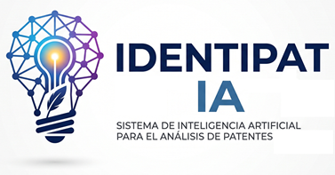

Identipat IA es una evolución tecnológica del servicio del Indecopi que integra inteligencia artificial para transformar el análisis de viabilidad de patentes en Perú. Esta herramienta permite orientar a los creadores a seleccionar la opción más adecuada para proteger para su creación.